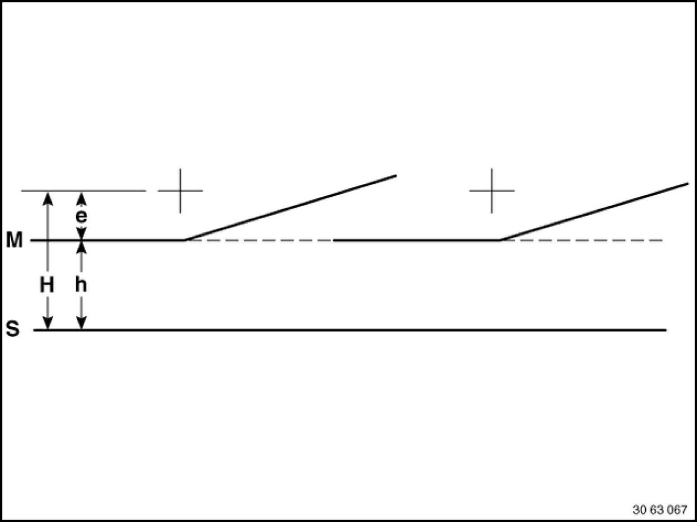

Test Requirements for Headlight Vertical Aim Adjustment
63 10 ... - Test requirements for headlight vertical aim adjustment

- Car parked on level ground.
- Replace faulty glass and mirrors and blackened light bulbs.
- Check tire pressure and correct if necessary.
- Apply load equivalent to one person on driver's seat (approx. 75 kg).
- Vehicle with full fuel tank or appropriate additional weight in luggage compartment.
- Correct adjustment of headlights in relation to engine hood (gap dimensions).
- Manual headlight vertical aim control: Turn handwheel to 0 position.
- Automatic headlight vertical aim control: Wait approx. 30 seconds after switching on lights.
- Version with xenon headlights: Wait 80 seconds after switching on lights. During this time, do not move the vehicle and avoid vibrations.
- Align headlight aimer with vehicle longitudinal axis and parallel to parking surface. Set marking line (M) on aimer to distance (e). Scale graduations on aimer are equal to a gradient in cm at a distance of 10 meters.

Light/dark limit of headlights in headlight aimer
e - Adjustment dimension, headlights:
- as per type plate on headlight housing in % (e.g.: 1.0% = 10 cm / 10 m = 10 on headlight aimer).
Adjustment dimension, fog lights:
- all vehicles 2.0% = 20 cm / 10 m = 20 on headlight aimer.
H - Height of center of headlight above parking surface.
h - H - e = height of marking line above parking surface
+ - Central mark = center point of high-beam headlight.
M - Marking line of headlamp aimer
S - Parking surface of vehicle and headlight aimer
Adjustment dimension (e) is only valid for EUR. Observe differing national regulations.